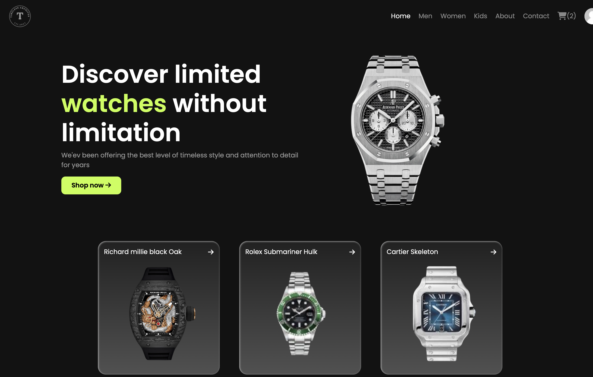

See the original interface
Browse the watch catalogue.
The archived project demonstration shows the storefront, catalogue filtering and an add-to-basket confirmation. It provides a view of the original application alongside the published client and server code.
Recorded project evidence; current checkout and payment completion have not been verified.
The problem and scope
Bring catalogue browsing, account access, a shopping basket and checkout into one web application. The project joins a Next.js front end to a separate Express back end, with MongoDB/Mongoose for application records.
The portfolio includes both client and server source. The original website is a historical UI preview; its catalogue returned an error at the November 2026 review, and the preview is not a functioning shop.
How the application fits together
| Layer | Implementation to inspect |
|---|---|
| Client | React context coordinates account state, product queries, cart updates and checkout requests. |
| API | Express composes routes for users, baskets, payments, orders and administration. |
| Persistence | Mongoose models represent users, products, baskets, checkout sessions and orders. |
| External integration | The payment route converts basket items into Stripe line items and stores a checkout-session reference. |
The order model records a product snapshot, delivery details and a status such as processing, shipped or delivered. Separating these records from the browser gives the project a useful example of client–server boundaries.
Follow the code
- Client state and API requests ↗
- Checkout-session construction ↗
- Order data model ↗
- Local setup and repository guide ↗
A useful review route is to follow a basket update from the React context into an API request, then inspect how the checkout route constructs line items and persists session information.
What is verified
Source structure, the original report screenshot and the archived demonstration have been reviewed. The historical homepage was accessible at the November 2026 review; account, payment and order completion have not been verified end to end on that deployment.
The source demonstrates integration work. It does not establish production-ready payment handling or security. Running the complete application requires a configured API, development database and test integration credentials.
Next development priorities
- Restore a demo API with clearly labelled sample products.
- Check authorization, server-side price validation and payment-confirmation handling before enabling checkout.
- Add automated catalogue, basket and checkout tests, including failed and cancelled payment paths.